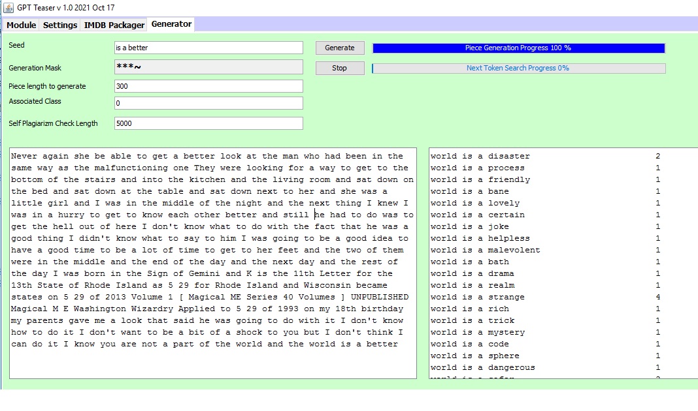

RECOURSE FROM THE CURSE
Fighting combinatorics with combinatorics: five principles and ten clues, with runnable browser labs, historical experiment recordings, and architecture animations.
The Escape in One Idea: Store Parts, Not Wholes
Dead End showed that choosing 200 active synapses out of 10,000 yields 1.71 × 10424 combinations. Enumerating that space is a dead end. Yet biological neurons operate continuously without enumerating it.
The same property that makes the space huge also makes composition powerful. Twenty-six letters in 12 positions allow ~1017 strings, yet nobody stores them. We store reusable parts (letters, fragments, words) and combine them on demand. The strategy is not to represent every combination—it is to discover, retain, combine, and reuse the patterns that actually matter.
The possible space is astronomical. The experienced space is structured.
Natural Text Occupies a Tiny Sliver of Possible Combinations
Take sequences of 10–12 characters from a finite alphabet. While theoretical possibilities grow exponentially (alphabetn), natural English text is bound by recurring fragments, dependencies, and constraints.
Recurring structure can reduce the number of distinct encountered windows. The size of that reduction depends on the corpus, alphabet, preprocessing, window length, and comparison baseline; no fixed reduction factor is established here.
[+ Check It Yourself / Reproduction Procedure]
Choose and record a corpus, alphabet, case/whitespace rules, and window lengths (for example, n = 4..12). Count unique windows in the original text and equally long shuffled controls preserving character frequencies. Repeat the shuffling and compare unique counts at matched corpus sizes. Both natural and random finite corpora occupy a shrinking fraction of alphabetn; that fact alone does not establish useful compression. Test whether retained structure also improves prediction or retrieval.
Fifteen Novels: Many-to-Many Population Clustering
If character-pattern populations are learned independently from 15 different novels, do their higher-level relationships emerge simply by comparing the populations against one another—without requiring exact matches between individual patterns?
[+ Experiment Setup & Clue]
Setup: Learn an independent population of character combinations from each of 15 novels, then compute pairwise population similarity across all 15.
Clue: Population-level similarity reveals structural relationships (clustering by author/style) without needing identical token sequences.
Integration turns diverse, graded inputs into protocol-agnostic response spikes.
Weighted Contributions & an Inclusive Threshold Band
This toy detector sums the current weighted contributions and emits an event when the sum lies within an inclusive amplitude band: lower ≤ Σ ≤ upper. It has no leaky membrane state or temporal integration window. Contributor names in the diagnostic log are available to the viewer, not encoded in the output event.
Local evidence can be combined across positions and time.
One local detector is ambiguous. Several configured detectors constrain more of the input, and sustained matches can combine evidence across successive observations. Clue 1 and Clue 2 make those operations inspectable; their usefulness depends on coverage, timing, and the input distribution.
Overlapping Receptive Fields & Spatial Combinatorial Selectivity
How Overlapping Detectors Carve Up the Input Space
Can a few local hard-AND detectors select a target from a large input space? Explore sampled false-positive rates and the exact selectivity implied by the number of distinct positions constrained. Five symbols in eleven positions allow 48,828,125 possible states.
[+ Read Spatial Explainer & Core Takeaway]
The Setup: An 11-position input (5 unique symbols, 511 = 48,828,125 states) feeds hard-AND nodes wired to target subpatterns. These detectors are configured from the target; they do not learn it.
The Discovery: Under uniform random input, constraining U distinct positions gives a match probability of 5−U. Shared positions are not independent evidence. Compare actual coverage and effective fan-in across wiring modes. Zero errors in a short sample does not establish a zero error rate or a biological mechanism.
Early Sequence Prediction, Sustained Traces & K-of-N Inference
Predicting Sequences from Partial Evidence via Sustained Activity
Extending spatial detection into time, this lab introduces sliding windows, persistent activation traces (working memory), and a K-of-N inference threshold that shifts the network from conservative recognition (K = N) to early sequence prediction (K < N).
[+ Read Temporal Explainer & Core Takeaway]
The Mechanism: Latent subpattern detectors sustain activation for a separately adjustable number of strides. The detector count N and sustain duration are different parameters.
Early prediction: With K < N, sufficient retained matches may trigger an event before the full target arrives. Earlier commitment trades evidence for speed; measure false positives as K, sustain, coverage, and input distribution change.
The computational object is the interacting population of patterns.
Decoupling Pattern Identity from Neuron Identity
In biological tissue, one neuron participates in many patterns, and one pattern spans many neurons. In software, we separate the two: retained combinations are represented explicitly as an attributed directed graph (hierarchical dictionaries).
Each pattern carries a symbolic key, constituent subpatterns, weights/thresholds, frequency, age, and temporal links. It is symbolic at the level of pattern identity, while inference remains massively distributed across populations.
[+ Why This Sidesteps the Symbolic vs. Subsymbolic War]
Patterns do not need human-readable labels to have explicit computational keys. Because each retained combination has an addressable identity, populations can be compared, merged, pruned, or queried bidirectionally without a separate symbolic reasoning engine bolted on top.
Noisy Sinusoids: Discovering Similarity Across Populations
Uses adjustable 3–12-position windows of quantized sinusoids, with vertical sample jitter and missing readings. Encountered combinatorial patterns accumulate into populations and are compared via high-dimensional similarity measures:
- One or more accumulated TEST windows against one or many trained populations
- An accumulated TEST population against each trained population
Continual local learning, bidirectional recall, and multimodal hierarchies.
Incremental Local Updates, Forgetting & Sleep-Like Reorganization (IMDb, Amazon, MNIST)
Can the same pattern substrate learn incrementally from single encounters using local attribute updates—combining unsupervised (UL), supervised (SL), and reinforcement (RL) signals—while managing capacity via deliberate weakening and sleep-like pruning?
| Dataset | Mechanisms Exercised in Code | Proposed / Conjectured Extensions |
|---|---|---|
| IMDb Reviews | Incremental pattern acquisition, local frequency/salience updates, sentiment association | Multi-pass offline consolidation & autonomous hierarchy restructuring |
| Amazon Reviews | Streaming text parsing & capacity control (historical generation; universal parsing mechanics) | Cross-domain transfer against frozen specialist populations |
| MNIST Digits | Spatial feature extraction, local supervised/reinforcement attribute weighting, saccadic traversal | Full closed-loop UL + SL + RL co-adaptation on one substrate |
One Substrate for Recognition, Recall & Completion
Because patterns and contexts are linked in an associative graph, inference works in multiple directions on the exact same substrate:
- Predict next token from preceding context (
A B → ?) - Recover preceding token from following context (
? B C) - Fill a missing middle token from surrounding context (
A ? C) - Compare frequency-driven vs. context-driven candidate selection

Three-way generation while learning · recording on YouTubeMultimodal Pattern Inputs (Stox & MNIST)
The MNIST experiments combine pixel patterns with gaze movement: visual observations and the displacement of the sensor. Stox combines market channels such as open price and volume; OHLCV means open, high, low, close, and volume. The pattern store natively accepts, combines, prunes, and infers over encoded multimodal inputs. These experimental applications remain unfinished.
The shared intelligence contract is input matrix → brain / processor → output matrix for effectors. PopMan manages the pattern populations within that processing loop.
Pattern storage and retrieval, and a specificity-priority timing model.
Learn in RAM → Merge with Disk → Retrieve by Context
A large symbolic pattern repository need not be resident or active all at once. Decomposed observations update keyed RAM dictionaries, which can merge into disk; similarity to a prompt or memory can select overlapping, context-relevant working populations. The Process View animates five concrete operations, while the Architecture View explains their relationship as two connected loops. Both presentations describe the same substrate.
Process View — operations: a mask extracts ABRACADABRA fragments; learned populations are compared; existing IDs receive updated attributes while unseen IDs are inserted. Then RAM merges into disk and overlapping context-related populations are borrowed. Shared-key counting, dictionary values, and memory amounts here are schematic examples, not reported experimental measurements.
Architecture View — relationships: an incoming sample becomes a pattern population; optional inference and dictionary learning proceed locally; capacity-triggered disk merging and context-triggered soft-expert loading form connected but distinct loops. Use Sequence/Image, Classify/Predict and the step controls. The retrieval policy shown here is a proposed composition of related mechanisms, not a claim of benchmarked end-to-end paging performance.
[+ Architectural implications of Clue 8]
- Mergeable learning: independent pattern dictionaries can be combined by shared symbolic keys and compatible attribute-update rules, rather than averaging weights.
- Out-of-core persistence: active RAM populations can be merged into a much larger disk repository; pruning and reorganization have their own criteria.
- Soft experts: context-relevant populations can overlap, without fixed expert boundaries, and can be assembled into a smaller working RAM subset.
Specific First, General as Fallback
The toy model assigns faster inference pathways to deeper layers and selects the earliest arriving active evidence. When deeper evidence is absent, a shallower layer may supply a later fallback. Depth is a configured proxy for specificity, not a measured property. The historical figure documents an earlier layered-activation visualization.
Biological axonal conduction differences and synaptic time courses motivate the conjecture, but this animation alone does not establish the mechanism in biological tissue.
labs/c9-activation.html
Learn once. Change the context. Inspect the next choice.
This lab brings incremental acquisition (Clue 5), associative continuation (Clue 6), and population similarity (Clue 3) into one experiment. A learned World Model holds the token patterns and their frequencies. Editable contexts define specialized views of that shared experience.
From experience to a next token
Configure: choose characters per token, sequence length, and wildcard allowance. Full input windows produce exact patterns and the permitted wildcard variants. Repeated patterns accumulate occurrence counts in a three-tier store.
Train: drop text files, pause or resume, and add more experience. Save the learned World Model as a ZIP; reload it later and generate without replaying the original texts.
Generate: the recent token history retrieves exact continuations, falling back to shorter suffixes and finally learned token frequencies. This is a specialized next-token use of pattern populations.
Steer: each considered context becomes an independent dictionary of exact 1-, 2-, and 3-token counts. Cosine similarity compares each candidate's matched prefix plus proposed token with those dictionaries. The highest mean scores remain eligible; Most, Least, Middle, or Random selects among ties.
Context edits affect subsequent choices without retraining. They rank the retrieved candidates; the available alternatives depend on the learned texts and current history. A sole candidate leaves no alternative to rerank.
Try a small experiment
- Choose one or more
.txtfiles from authors, genres, or languages you want to explore. Start with one character per token, sequence length 10, and zero wildcards. - In Train, drop the files and start training. Open Generation when the model has learned some experience.
- Enter a prompt taken from one of your training texts. Generate with the context checkboxes off and inspect the candidates and frequencies.
- Paste a short passage into a context, enable Consider, and watch the Context scores. Edit or toggle it while generating; previous output remains.
- To start a fresh continuation in another voice or language, enable Start from context and select its seed. This resets the continuation while preserving the World Model.
The inline tags record which contexts and frequency mode applied. Contexts 1, 2, and 3 contribute red, green, and blue shading. Observe scores and candidate choices; a language or genre change depends on the alternatives available.
What this clue demonstrates
Implemented here: incremental token-pattern learning, bounded working storage, next-token retrieval, live context reranking, inspectable choices, and learned-model ZIP snapshots. All text processing runs locally in the browser.
The edge-device illustrations suggest possible distributed contributors; this lab runs one learner. ZIP snapshots store whole learned models. Automatic expert extraction, distributed model merging, out-of-core retrieval, and a biological account of contextual attention remain separate architectural proposals.
Additional historical material
The myelin video is preserved for context. The historical IMDb recording and three-way generation recording are hosted on YouTube. These materials are separate from the runnable browser implementations.
The Thread Connecting the Clues
Together, these experiments ask a practical engineering question: can an attributed hierarchy of identifiable, reusable combinatorial patterns support distributed inference and symbolic manipulation in one continually adapting substrate?
What Would Count Against This Approach (How to Falsify It)
- Occupancy doesn't compress (Principle 1): Natural inputs offer no reproducible advantage over matched randomized controls in useful retained structure, predictive accuracy, or storage cost.
- Population similarity collapses at scale (Clues 3–4): Collective similarity across overlapping patterns breaks down under realistic noise, jitter, and missing inputs as populations grow.
- Maintenance cost explodes (Clue 5, Clue 8): Pattern populations cannot be incrementally learned, pruned, merged, and retrieved within practical RAM and disk budgets.